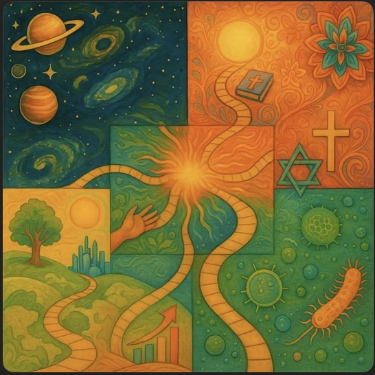
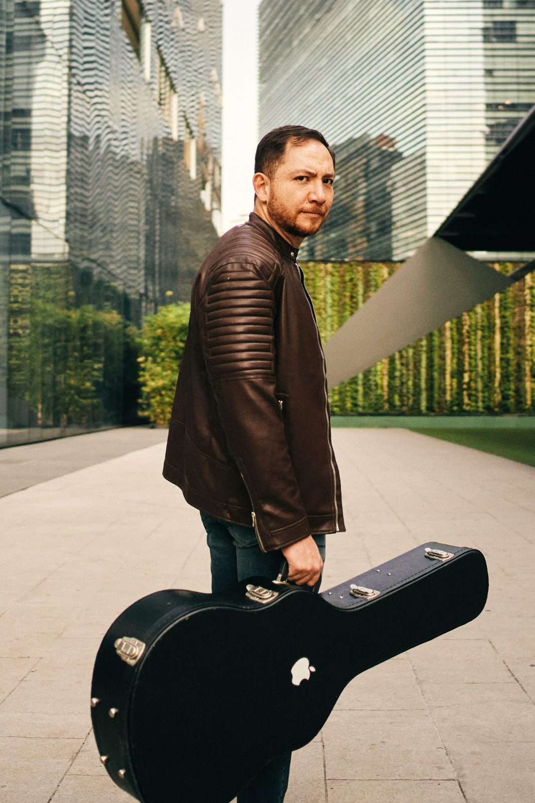

{{ t.heroTag }}
OMAR
VIAZCÁN
VIAZCÁN
{{ t.heroSub }}
{{ playPauseIcon }}
{{ sugLabel }}
{{ sugTitulo }} · {{ sugAnio }}
↻
{{ t.tabTag }}
{{ t.tabTitle }}
{{ t.tabBody }}
⚄ {{ t.dadoBtn }}
{{ dadoLabel }} {{ dadoTitulo }} ({{ dadoAnio }})
{{ t.elJugador }}

{{ t.cartaInicial }}
OMAR
VIAZCÁN
VIAZCÁN
{{ t.flujoTag }}
{{ t.flujoSub }}
01 · {{ t.navMusica }}
02 · {{ t.navLetras }}
03 · {{ t.navConcepto }}
04 · {{ t.navBlog }}
05 · {{ t.navContacto }}
06 · ████
{{ t.flujoVert }}
{{ t.desciende }}
↓
{{ horaLabel }} · {{ t.dimension }} {{ dimNombre }}
{{ emoPregunta }}
{{ emoLabel }}
“{{ fraseTexto }}”
— {{ fraseFuente }}
{{ t.bovedaTitle }}
{{ t.bovedaBody }}
{{ t.bovedaEnter }}
{{ t.bovedaTitle }} · 1999–2008
{{ t.vaultSub }}
{{ t.vaultCerrar }}
{{ v.titulo }}
{{ v.anio }}
{{ v.desc }}
{{ v.playIcon }}
maqueta
{{ t.vaultNote }}
{{ t.letrasTag }}
{{ t.letrasT1 }}
{{ t.letrasT2 }}
{{ t.letrasT2 }}
“Sólo deja de evolucionar, comienza a revolucionar. Quizá la gente te juzgue de loco, pero con fe puedes mover montañas.”
{{ t.letrasCap1 }}
“Miras la escenografía y dices: ‘¡Qué patética situación!’ La vida pasa sin esperar, y todos se saben tan bien el guión.”
{{ t.letrasCap2 }}
“Quítate la cera de la espalda que nacerá tu propio par.”
{{ t.letrasCap3 }}
{{ t.cancioneroTag }}
{{ t.cancioneroTitle }}
{{ t.cancioneroHint }}
{{ t.grupoAlbum }}
{{ s.titulo }}
{{ s.anio }}
{{ t.grupoBoveda }}
{{ s.titulo }}
{{ s.anio }}
{{ letraTitulo }}
{{ letraAnio }}
{{ letraPlayIcon }} {{ t.escuchar }}
{{ ln }}

{{ t.conceptoTag }}
{{ t.conceptoTitle }}
{{ t.conceptoIntro }}
{{ p.num }}
{{ p.nombre }}
{{ p.texto }}
{{ t.bitacoraTag }}
{{ t.bitacoraTitle }}
{{ t.bitacoraHint }}
{{ b.fecha }}
{{ b.titulo }}
{{ b.texto }}
{{ t.bitacoraArchivo }}
{{ t.galeriaTag }}
{{ t.galeriaTitle }}
{{ t.galeriaHint }}
{{ t.galeriaKit }}